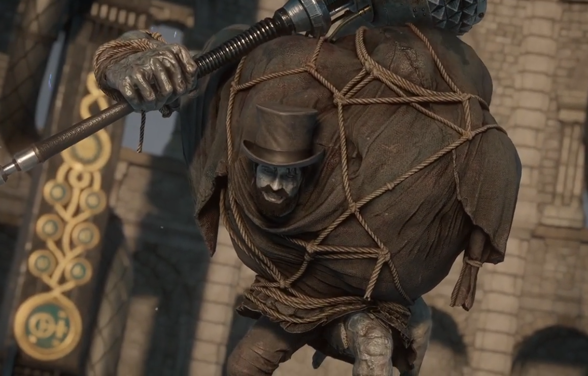
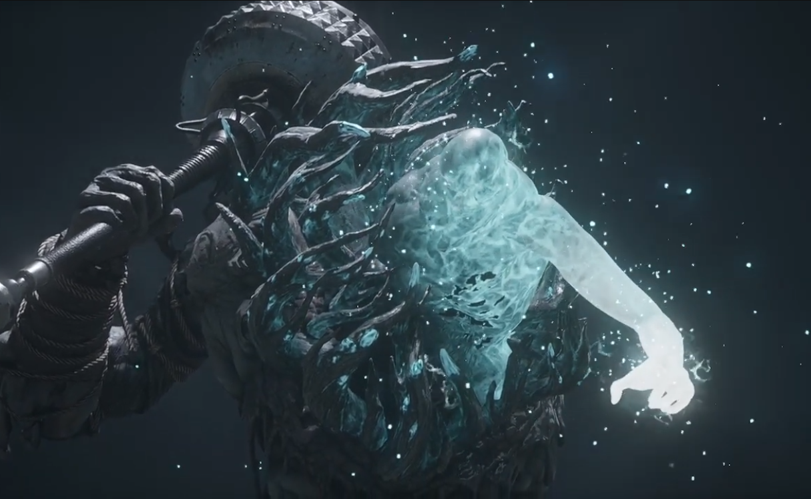

Simon Manus
The mastermind behind the Petrification Disease and the leader of the Alchemists. Simon manipulated the citizens of Krat to harvest their Ergo, aiming to evolve humanity by force. In his first phase, he fights as a mutated monstrosity wielding a giant mace. In his second phase, he descends from the sky as a self-proclaimed deity, unleashing screen-filling magic and disruption waves.
Combat Tips
Phase 1 is a straightforward test of stamina and dodging; his mace swings are slow but hit like a truck. Phase 2 turns into a chaotic bullet hell. He will summon golden Ergo projectiles, massive sweeping lasers, and a giant hand from the sky. When the glowing hand appears above, stop attacking and just sprint across the arena until it slams down. Disruption resistance gear is absolutely mandatory here.
Personal Experience
Watch the video below and see me, solo this BOZO.
At my first attempt.
Watch Video
Combat Stats
- Type: Human / Carcass
- Weakness: Acid (Phase 1) / Fire (Phase 2)
- Resistance: Electric Blitz
- Location: Arche Abbey Cradle of the Gods
- Summon: Specter highly recommended
- Drop: Fallen One's Ergo